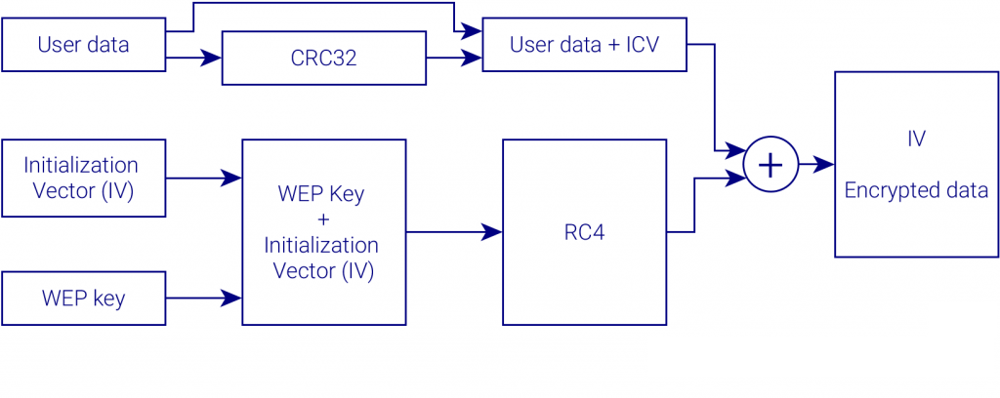

Wired Equivalent Privacy o tambien conocido como Privacidad Equivalente a Cableado (WEP), fue presentado en 1999 y se mantuvo como estandar de seguridad de la red hasta el 2004. WEP es el sistema de cifrado incluido en el estándar IEEE 802.11 como protocolo para redes Wireless que permite cifrar la información que se transmite. Proporciona un cifrado a nivel 2, basado en el algoritmo de cifrado RC4 que utiliza claves de 64 bits. WEP usa el algoritmo de cifrado RC4 para la confidencialidad, mientras que el CRC-32 proporciona la integridad. El RC4 funciona expandiendo una semilla ("seed" en inglés) para generar una secuencia de números pseudoaleatorios de mayor tamaño. Esta secuencia de números se unifica con el mensaje mediante una operación XOR para obtener un mensaje cifrado. Uno de los problemas de este tipo de algoritmos de cifrado es que no se debe usar la misma semilla para cifrar dos mensajes diferentes, ya que obtener la clave sería trivial a partir de los dos textos cifrados resultantes. Para evitar esto, WEP especifica un vector de iniciación (IV) de 24 bits que se modifica regularmente y se concatena a la contraseña (a través de esta concatenación se genera la semilla que sirve de entrada al algoritmo).
Una clave WEP de 128 bits consiste casi siempre en una cadena de 26 caracteres hexadecimales (0-9, a-f) introducidos por el usuario. Cada carácter representa 4 bits de la clave (4 x 26 = 104 bits). Añadiendo el IV de 24 bits obtenemos lo que conocemos como “Clave WEP de 128 bits”. Un sistema WEP de 256 bits está disponible para algunos desarrolladores, y como en el sistema anterior, 24 bits de la clave pertenecen a IV, dejando 232 bits para la protección. Consiste generalmente en 58 caracteres hexadecimales. (58 x 4 = 232 bits) + 24 bits IV = 256 bits de protección WEP.
El tamaño de clave no es la única limitación de WEP. Crackear una clave larga requiere interceptar más paquetes, pero hay modos de ataque que incrementan el tráfico necesario. Hay otras debilidades en WEP, como por ejemplo la posibilidad de colisión de IV’s o los paquetes alterados, problemas que no se solucionan con claves más largas.
En el sistema WEP se pueden utilizar dos métodos de autenticación: Sistema Abierto y Clave Compartida.
Para más claridad hablaremos de la autenticación WEP en el modo de Infraestructura (por ejemplo, entre un cliente WLAN y un Punto de Acceso), pero se puede aplicar también al modo Ad-Hoc.
El cliente WLAN no se tiene que identificar en el Punto de Acceso durante la autenticación. Así, cualquier cliente, independientemente de su clave WEP, puede verificarse en el Punto de Acceso y luego intentar conectarse. En efecto, la no autenticación (en el sentido estricto del término) ocurre. Después de la autenticación y la asociación, el sistema WEP puede ser usado para cifrar los paquetes de datos. En este punto, el cliente tiene que tener las claves correctas.
WEP es usado para la autenticación. Este método se puede dividir en cuatro fases: